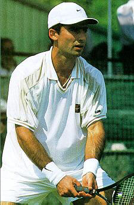

Tennis star
1. First we need to verify the player's name and his real ranking in the ATP (Association of Tennis Professionals) top 100 ranked single players as of November 1997.
Sargis Sargsian's ATP ranking is 75th as ofmid-March.
2. Can you get us a photo of the player from his Web site? Where is he playing next?
This is what Sargissian looks like in one of the photos from his Web site at http://pw2.netcom.com/~cmansour/sargis.htm.
|  |
Next on his schedule is the Hall of Fame Tennis Championship in Newport, RI (July 6-12, 1998) where he is the defending champion.
3. So when was he born, exactly?
According to Cathrine Mansourian whom we contacted through the address found in Sargis Sargsian's Web site (edoape@hotmail.com) Sargis was born on June 3, 1973.
4. Can you find more information on the Web related to Armenians in sports?
How about the Armenian Sports Champions page at: http://pw1.netcom.com/~kojian/armo11.html
(Click on the Linking icon to go back)